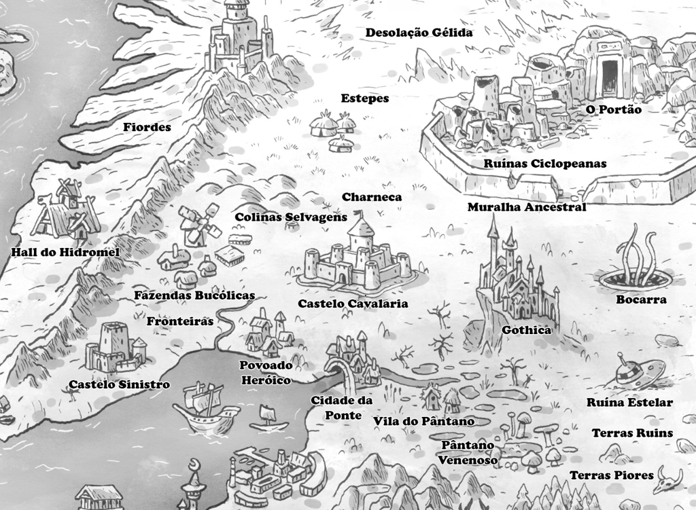
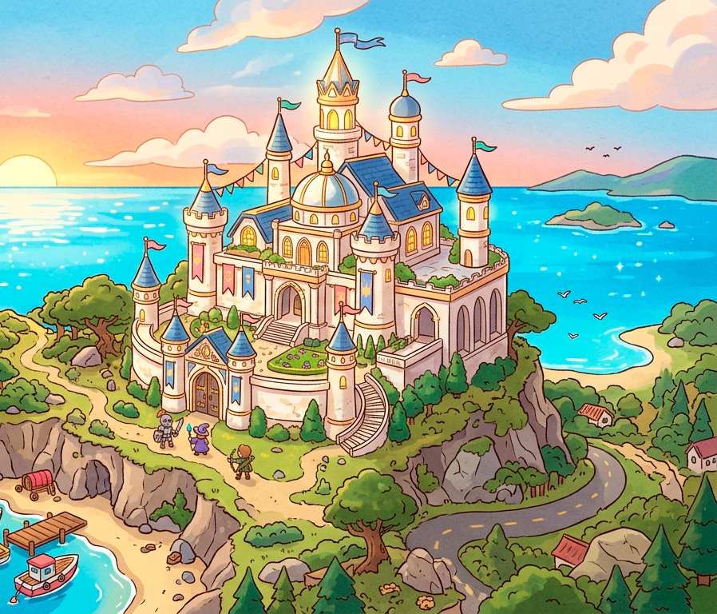

Phantasia é cheio de lugares a se explorar, alguns conhecidos, outros nem tanto, e alguns que alguém ainda precisa descobrir.
Castelo Cavalaria
No coração de Phantasia ergue-se o imponente Castelo Cavalaria, residência da família real e símbolo máximo da autoridade do reino. É de seus salões amplos, adornados com bandeiras e ecos de antigas vitórias, que decisões moldam o destino de toda a nação, guiando seu povo entre tempos de prosperidade e incerteza. O castelo é cercado por uma cidade ativa e moderna, onde negócios prosperam e mistérios são discutidos nas sombras. A maioria dos grandes grupos de aventureiros está aqui quando não explorando, descansando entre um trabalho e outro.
Ao redor do castelo floresceu uma cidade vibrante e em constante movimento, considerada a mais moderna de todo o reino. Mercadores, artesãos e banqueiros fazem dela um centro de riqueza e inovação, onde oportunidades surgem a cada esquina. No entanto, sob essa aparência próspera, existe uma camada mais obscura: becos silenciosos, sociedades secretas e intrigas políticas que se desenrolam longe dos olhos do público. Não é por acaso que muitos dos mais renomados grupos de aventureiros escolhem este lugar como base — aqui, contratos são fechados, rumores circulam livremente e sempre há algo acontecendo, seja nas tavernas iluminadas ou nas sombras mais profundas.
Ao redor da cidade ficam as fazendas do reino, terrenos férteis que garantem o sustento da capital, pontuadas por moinhos, celeiros e pequenas comunidades rurais. Há uma pequena quantidade de vilas ao norte, nas estepes, e a leste, nos pântanos.
O porto mercantil do reino fica ao sul e é de onde saem todas as embarcações para outros continentes. Outros povoados e cidades existem nos arredores.
O rei e a rainha não são mais casados, mas governam juntos, respeitando mutuamente as decisões do parceiro de governo. Alguns consideram isso um equilíbrio delicado (e eles realmente se estranham e brigam de vez em quando), mas tem funcionado bem pelos últimos 10 anos.

Gothica
A leste de Cavalaria ergue-se Gothica, uma cidade de silhueta marcante, construída no topo de um monte escarpado cujas encostas são cobertas por trilhas sinuosas e antigos muros de contenção. De longe, suas torres estreitas e templos de pedra escura parecem tocar o céu, envoltos quase sempre por névoas suaves que lhe conferem um ar solene e enigmático.

Após o isolamento do Monastério Plácido, Gothica ascendeu rapidamente como o principal centro religioso de Phantasia, atraindo peregrinos, estudiosos e curiosos em busca de orientação espiritual ou respostas para inquietações mais profundas. Apesar de Phantasia nunca ter sido dominada por uma única fé, a cidade tornou-se palco de uma mudança sutil, porém poderosa.
Nos últimos anos, um líder religioso carismático conquistou influência crescente, unificando diferentes crenças sob um discurso aparentemente conciliador. Muitos veem nisso uma nova era de ordem espiritual; outros, mais cautelosos, sussurram que Gothica pode estar deixando de ser apenas um refúgio de fé para se tornar o epicentro de algo muito maior.
Palácio de Mármore
Erguida no lado oposto do Castelo Sinistro, a fortaleza nasceu como uma sentinela inabalável, projetada para vigiar cada movimento vindo do sombrio domínio do lich.
